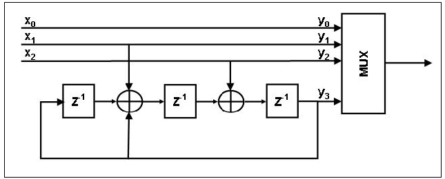
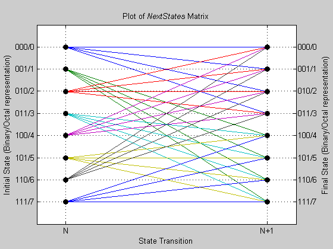
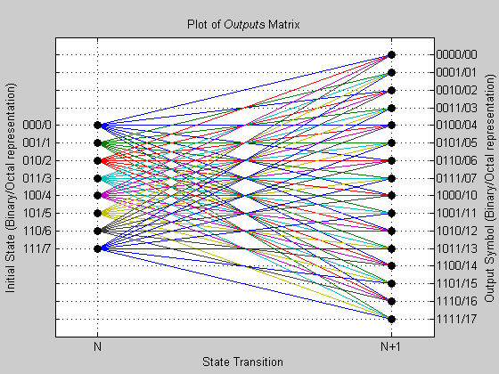

This file shows an example of a trellis structure for a convolutional encoder with uncoded bits and feedback. The encoder's peculiar specifications do not match the requirements of poly2trellis.
In such a case, even though the function poly2trellis will not be able to create the appropriate trellis structure, one can still manually create the structure that is later used by both the encoder and decoder, as it is shown in the Simulink model.
%-- This is a block diagram of the encoder structure we plan to implement. X = imread('conv_blckdiagram.jpg'); [m,n] = size(X); figure('Units','Pixels','Position',[200 200 n+2 m+2],'color','white'); imagesc(X); colormap gray; set(gca,'Position',[0.01 0.01 1-0.02 1-0.02],'ytick',[0],'xtick',[0]); %-- As seen in the figure, we need to create a rate 3/4 convolutional encoder % with feedback connection whose MSB bit remains uncoded. %-- Declare variables according to the specifications. k = 3; n = 4; constraintLength = 4;
%-- A trellis is represented by a structure with the following fields: % numInputSymbols, (number of input symbols) % numOutputSymbols, (number of output symbols) % numStates, (number of states) % nextStates, (next state matrix) % outputs, (output matrix) % % For more information about these fields, type 'help istrellis' in MATLAB. %-- Reset any previous occurrence of myTrellis structure. clear myTrellis; %-- Define number of input symbols. myTrellis.numInputSymbols = 2^k; %-- Define number of output symbols. myTrellis.numOutputSymbols = 2^n; %-- Define number of states. myTrellis.numStates = 2^(constraintLength-1);
%-- The nextStates matrix is a [numStates x numInputSymbols] matrix. % The (i,j) element of the nextState matrix is the resulting final state index % that corresponds to a transition from the initial state i for an input equal % to j. myTrellis.nextStates = [0 1 2 3 0 1 2 3; ... 6 7 4 5 6 7 4 5; ... 1 0 3 2 1 0 3 2; ... 7 6 5 4 7 6 5 4; ... 2 3 0 1 2 3 0 1; ... 4 5 6 7 4 5 6 7; ... 3 2 1 0 3 2 1 0; ... 5 4 7 6 5 4 7 6]
myTrellis =
numInputSymbols: 8
numOutputSymbols: 16
numStates: 8
nextStates: [8x8 double]
%-- Plot the nextStates matrix to illustrate the branch transitions between % different states for a given input. % % Call a utility function. To view this file, type 'edit conv_plotNextStates'. conv_plotNextStates(myTrellis.nextStates);
%-- The outputs matrix is a [numStates x numinputSymbols] matrix. % The (i,j) element of the outputs matrix is the output symbol (in octal % format) given a current state i and an input equal to j. outputs = [0 2 4 6 10 12 14 16; ... 1 3 5 7 11 13 15 17; ... 0 2 4 6 10 12 14 16; ... 1 3 5 7 11 13 15 17; ... 0 2 4 6 10 12 14 16; ... 1 3 5 7 11 13 15 17; ... 0 2 4 6 10 12 14 16; ... 1 3 5 7 11 13 15 17] % To display these values in decimal format, use OCT2DEC in the Communications % Toolbox. outputs_dec = oct2dec(outputs) % Copy outputs matrix into myTrellis structure. myTrellis.outputs = outputs
outputs =
0 2 4 6 10 12 14 16
1 3 5 7 11 13 15 17
0 2 4 6 10 12 14 16
1 3 5 7 11 13 15 17
0 2 4 6 10 12 14 16
1 3 5 7 11 13 15 17
0 2 4 6 10 12 14 16
1 3 5 7 11 13 15 17
outputs_dec =
0 2 4 6 8 10 12 14
1 3 5 7 9 11 13 15
0 2 4 6 8 10 12 14
1 3 5 7 9 11 13 15
0 2 4 6 8 10 12 14
1 3 5 7 9 11 13 15
0 2 4 6 8 10 12 14
1 3 5 7 9 11 13 15
myTrellis =
numInputSymbols: 8
numOutputSymbols: 16
numStates: 8
nextStates: [8x8 double]
outputs: [8x8 double]
%-- Plot output matrix to illustrate the possible output symbols for a given % state depending on the input symbol. conv_plotOutputs(myTrellis.outputs, myTrellis.numOutputSymbols);
%-- Use the function 'istrellis' from the Communications Toolbox to check the % validity of the resulting structure. istrellis(myTrellis)
ans =
1